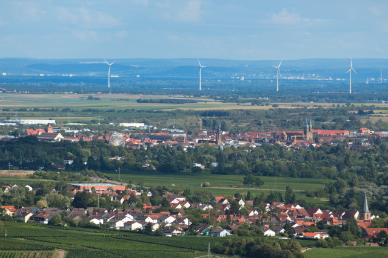
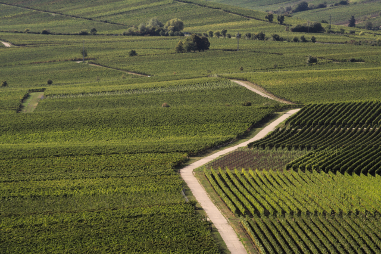
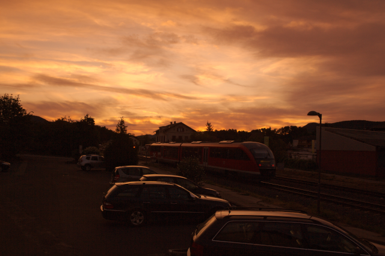
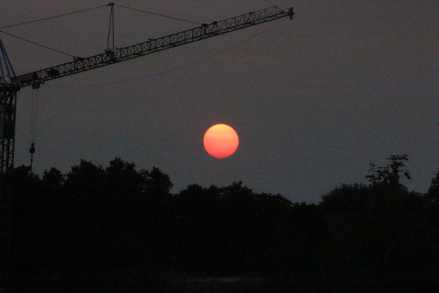

Wo ich lebe
Um es ganz genau zu sagen: Ich wohne bei 49°12'24.0"N 8°04'40.8"E. Das ist die Koordinate, die mir Google Maps angezeigt hat, als ich mal mein Smartphone verloren und wiedergefunden habe. Das können Sie sich auf der Karte anschauen – es liegt im Südwesten von Deutschland, ungefähr 25 Kilometer von der französischen Grenze entfernt.
Ich wohne im Dorf Godramstein. Godramstein gehört seit 1972 zur Stadt Landau und ist ein Stadtteil davon.

Auf dem Bild sieht man vorne das Dorf Godramstein, dann in der Mitte die Stadt Landau und dahinter das Rheintal. Ganz im Hintergrund erkennt man den Schwarzwald.
Hier, wo ich wohne, bin ich von Weinbergen umgeben. Wein ist das wichtigste landwirtschaftliche Produkt in dieser Gegend.

In der Nähe ist der Pfälzerwald, der ein ausgewiesenes Naturschutzgebiet ist.
Berühmt ist die Burg Trifels, wo Richard Löwenherz, der König von England, nach dem Dritten Kreuzzug im Jahr 1193 gefangen gehalten wurde.

Was mir am meisten gefällt, sind die sehr guten Möglichkeiten, hier in der Nähe in der Natur spazieren zu gehen.

In der Nähe befindet sich der Bahnhof Godramstein. Hier fährt der Zug zwischen den Städten Pirmasens und Landau.

Von meiner Wohnung aus kann ich den Bahnhof sehen, die Züge und habe einen weiten Blick über den Pfälzerwald. Hier kann man zum Beispiel einen Zug während des Sonnenuntergangs sehen.

Und ich liebe die schönen Sonnenuntergänge, die ich jeden Tag sehen kann.
